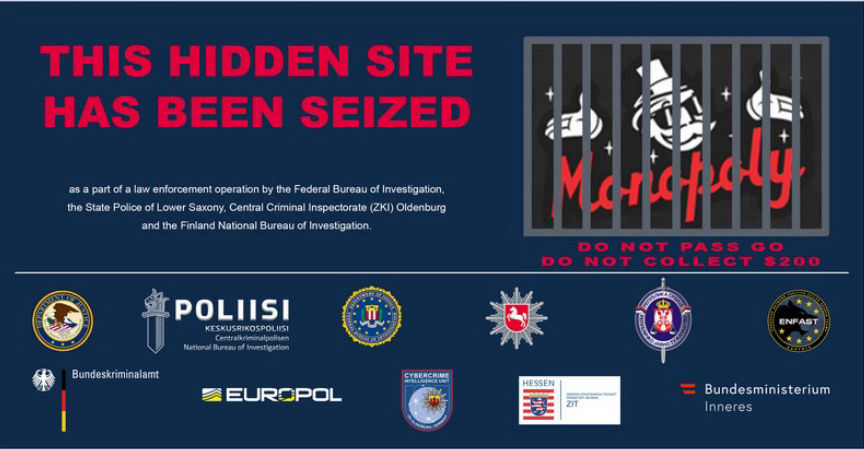
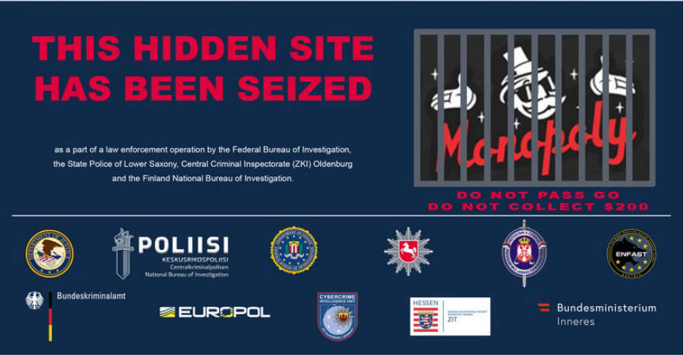

Monopoly Market Admin Sentenced
A Serbian man was sentenced to 168 months in federal prison for his role in the creation and operation of the now-defunct dark web marketplace, Monopoly Market.

Milomir Desnica, 34, conspired in the creation and launch of Monopoly market in 2019. He participated in the market's operation until December 2021, when German and Finnish authorities seized its servers.
The FBI acquired a forensic image of the server and launched an analysis into the market's database. While reviewing the market's bitcoin wallets, the investigators identified several wallets that had been receiving bitcoin from Monopoly admin's wallets.
One of the wallets had also received bitcoin from an undisclosed cryptocurrency exchange. The exchange revealed that the account that had sent the bitcoin belonged to Desnica.
Further investigations revealed that the email associated with the account had been used during purchases of gaming gift cards paid for by crypto acquired from Monopoly admin wallets.
The investigators acquired a search warrant for the Gmail account. They allegedly found the seed phrases of two bitcoin wallets linked to Monopoly market admins. One of the wallets was used to receive commissions from vendors.
Desnica was arrested by Austrian authorities in November 2022. A search of his residence resulted in the seizure of electronic devices, approximately 18,250 Euros in cash, 0.2023 ETH, and 866 USDT.
In his plea agreement, Desnica disclosed that he was in charge of running the market's backend. He also helped in reviewing vendor applications and handling support tickets.
Desnica pleaded guilty to charges of conspiracy to distribute and possession with intent to distribute 50 grams or more of methamphetamine on November 8, 2023. He admitted that by running the market, he facilitated the distribution of over 30 Kilograms of Meth to US residents.
US District Court Judge Carl J. Nichols sentenced Desnica to 14 years in prison on February 15, 2024. The judge also ordered him to forfeit the cash and crypto seized during his arrest.

Monopoly Market seizure banner
Milomir Desnica, 34, conspired in the creation and launch of Monopoly market in 2019. He participated in the market's operation until December 2021, when German and Finnish authorities seized its servers.
The FBI acquired a forensic image of the server and launched an analysis into the market's database. While reviewing the market's bitcoin wallets, the investigators identified several wallets that had been receiving bitcoin from Monopoly admin's wallets.
One of the wallets had also received bitcoin from an undisclosed cryptocurrency exchange. The exchange revealed that the account that had sent the bitcoin belonged to Desnica.
Further investigations revealed that the email associated with the account had been used during purchases of gaming gift cards paid for by crypto acquired from Monopoly admin wallets.
The investigators acquired a search warrant for the Gmail account. They allegedly found the seed phrases of two bitcoin wallets linked to Monopoly market admins. One of the wallets was used to receive commissions from vendors.
Desnica was arrested by Austrian authorities in November 2022. A search of his residence resulted in the seizure of electronic devices, approximately 18,250 Euros in cash, 0.2023 ETH, and 866 USDT.
In his plea agreement, Desnica disclosed that he was in charge of running the market's backend. He also helped in reviewing vendor applications and handling support tickets.
Desnica pleaded guilty to charges of conspiracy to distribute and possession with intent to distribute 50 grams or more of methamphetamine on November 8, 2023. He admitted that by running the market, he facilitated the distribution of over 30 Kilograms of Meth to US residents.
US District Court Judge Carl J. Nichols sentenced Desnica to 14 years in prison on February 15, 2024. The judge also ordered him to forfeit the cash and crypto seized during his arrest.